| About IR |
| Editors |
| Author instructions |
| Copyright |
| Author index |
| Subject index |
| Search |
| Reviews |
| Weblog |
| Register |
| Home |
Volume 9 No 4 July, 2004
Papers from the School of Information Management, Victoria University Wellington, Wellington, New Zealand.
Matthew Conway and Dan Dorner
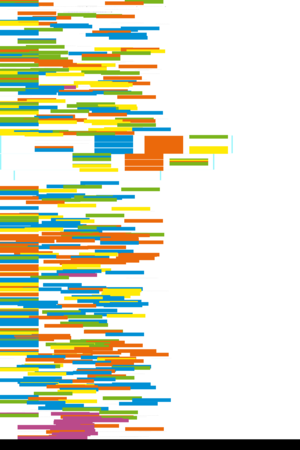An evaluation of New Zealand political party Websites
Beverley G. Hope and Zhiru Li
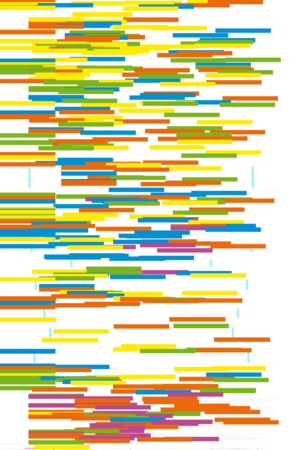Online newspapers: the impact of culture, sex, and age on the perceived importance of specified quality factors
Alastair G. Smith
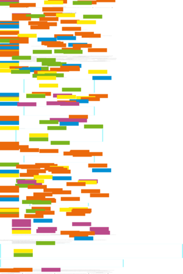Web links as research indicators: analogues of citations?
David Johnstone, Mary Tate, and Marcus Bonner
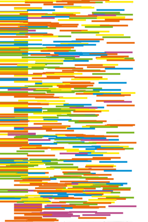Bringing human information behaviour into information systems research: an application of systems modelling
Pak Yoong and David Pauleen
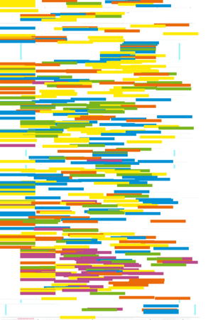Generating and analysing data for applied research on emerging technologies: a grounded action learning approach
Papers from the Conference, 'Toward a user-centred approach to digital libraries', Espoo, Finland, September 8 - 9, 2003
Brinley Franklin
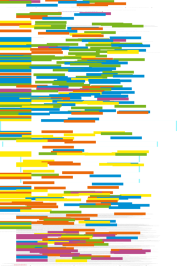Library usage patterns in the electronic information environment
Annaïg Mahé
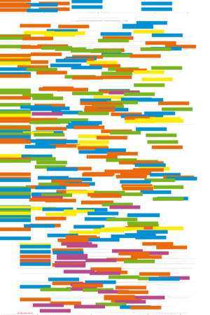Beyond usage: understanding the use of electronic journals on the basis of information activity analysis
Other refereed papers
Janet Cooper, Rachael Lewis and Christine Urquhart
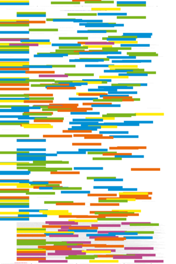Using participant or non-participant observation to explain information behaviour
Dror G. Feitelson
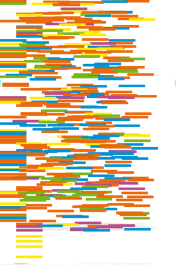On identifying name equivalences in digital libraries
Joachim Griesbaum
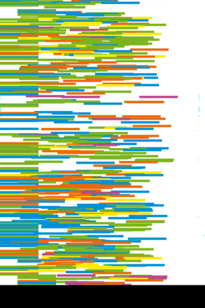Evaluation of three German search engines: Altavista.de, Google.de and Lycos.de
Jarkko Kari
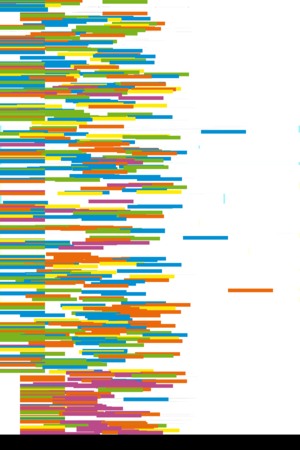Web information seeking by pages: an observational study of moving and stopping
Alan R. Peslak
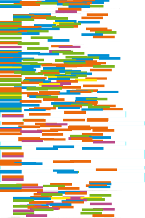An empirical study of the effect of information technology expenditures on student achievement
Antonio Pulgarín, Cristina Carapeto, and José M. Cobos
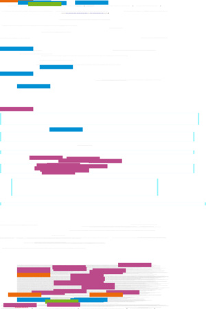Análisis bibliométrico de la literatura científica publicada en "Ciencia. Revista hispano-americana de ciencias puras y aplicadas" (1940-1974)
Antonio Ángel Ruiz Rodríguez and David Gómez Domínguez
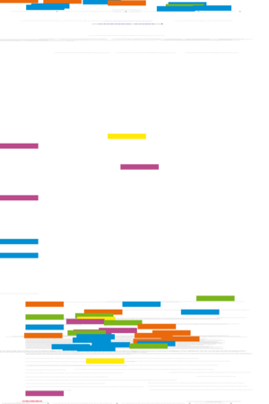Diseño y desarrollo de una plataforma digital de apoyo a la docencia y a la investigación en Archivos Electrónicos: un portal temático
Elías Sanz-Casado, Carmen Martín-Moreno, Carlos García-Zorita and María Luisa Lascurain-Sánchez
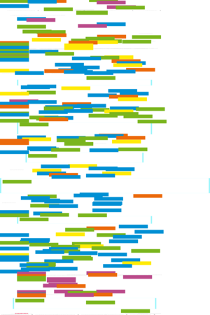Study of interdisciplinarity in chemistry research based on the production of Puerto Rican scientists 1992-2001
Carlos Vílchez Román
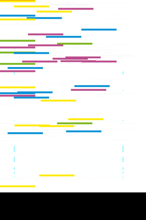Censura y tolerancia del material sexualmente explícito: la opinión de los estudiantes universitarios de pregrado
 Resúmenes en Español
Resúmenes en Español
Watch this: forms move centre stage. — one of a series of occasional columns by Terrence A. Brooks of the Information School, University of Washington, USA.
Reviews
Bell, David J., Loader, Brian, Pleace, Nicholas, and Douglas Schuler. Cyberculture: the key concepts London: Routledge, 2004.
Booth, Andrew and Brice, Anne (Eds.) Evidence-based practice for information professionals: a handbook. London: Facet Publishing, 2004.
Boczkowski Pablo J. Digitizing the news: innovation in online newspapers. Cambridge, MA: The MIT Press, 2004.
Gay, Geri and Hembrooke, Helene Activity-centred design: an ecological approach to designing smart tools and usable systems. Cambridge, MA: MIT Press, 2004.
Hildreth, Paul and Kimble, Chris. Knowledge networks: innovation through communities of practice. Hershey, PA: Idea Group Publishing, 2004.
Hunter, Gordon M. and Tan, Felix B. (Eds.) Advanced topics in global information management: Vol. 3. Hershey, PA: Idea Group Publishing, 2004.
Milstein, Sarah and Dornfest, Rael Google: the missing manual Sebastopol, CA: Pogue Press/O'Reilly, 2004.
Norman, Sandy. Practical copyright to information professionals. London: Facet Publishing, 2004.
What's in the open access e-journals?
Conference announcements
A message to Conference organizers.
ISIC (Information Seeking in Context) 2004, Dublin, Ireland, 1-3 September 2004
ECDL 2004, the 8th European Digital Library Conference, 12-17 September, 2004. University of Bath, United Kingdom.
ALISE 2005 Annual Conference. Boundary Crossings: LIS Education in a Global Context. 11-14 January, 2005, Boston, Massachusetts
Check the other resources available at InformationR.net - free resources for information researchers. If you find Information Research useful please sign in and we'll notify you of future issues.
Contribute ideas and links to relevant resources on the Weblog. Join at
http://www.free-conversant.com/irweblog/
Information Research: an international electronic journal, is published four times a year by Professor Tom Wilson with technical support from Lund University, Sweden and editorial support from the Swedish School of Librarianship and Information Science, Högskolan in Borås.
| |||
 |
Web Counter |
||